369 Mart Orders turns every order a customer places in the shop app or on the website into a real order in the backend, and gives your team two working screens: the Orders desk, which always answers “what do I pack next?”, and the Returns desk, which answers “which return is waiting on us?”. Each order moves through a short list of statuses, one button press at a time.
The last step is protected: an order only becomes Delivered when the customer reads out their six-digit door code. Every refund — a cancellation, a return, an item taken out — goes to the customer's 369 Wallet straight away, with a credit note for the accounts. This module sends no messages of its own: the customer sees each change on their own order page in the shop app.
| Word | What it means |
|---|---|
| Quick / Express | The two shop fronts (shown as Storefront). Quick orders go Packed → Out for delivery; Express orders go Shipped → Out for delivery. |
| Door code | A six-digit code the customer sees in their app. Asking for it at the door is the only way to mark an order Delivered. |
| Late | Still on its way after the time the customer was promised. |
| Cash to collect | Cash-on-delivery orders still on their way: money the rider must bring back. |
| 369 Wallet | The customer's money balance in the shop. All refunds land here. |
| Credit note | The accounting document that records money given back against an invoice. |
| Replacement offer | Up to three other products you suggest when an item has run out. The customer picks one, or a refund. |
Part 1 – Setting Up shows where the screens live and the one setting this module adds. Part 2 – Everyday Use walks through the Orders desk, the door code, out-of-stock items, failed deliveries, cancellations, printing and the Returns desk. Part 3 – Keeping It Secure & In Order covers the door code's privacy, the order history, where refund money goes and who can do what.
Done once by an administrator. If the menus below are visible and the answer times suit you, skip to Part 2.
Open 369 Mart from the main menu. This module adds:
The Orders and Returns entries are shown only to staff with Salesperson rights or higher.
Open Store → Settings and pick the Orders tab. When an item runs out and you offer a replacement, the customer has this long to choose; with no answer, the item is refunded to their 369 Wallet.
Press Save changes (or Reset to undo). The wait must be at least one minute.
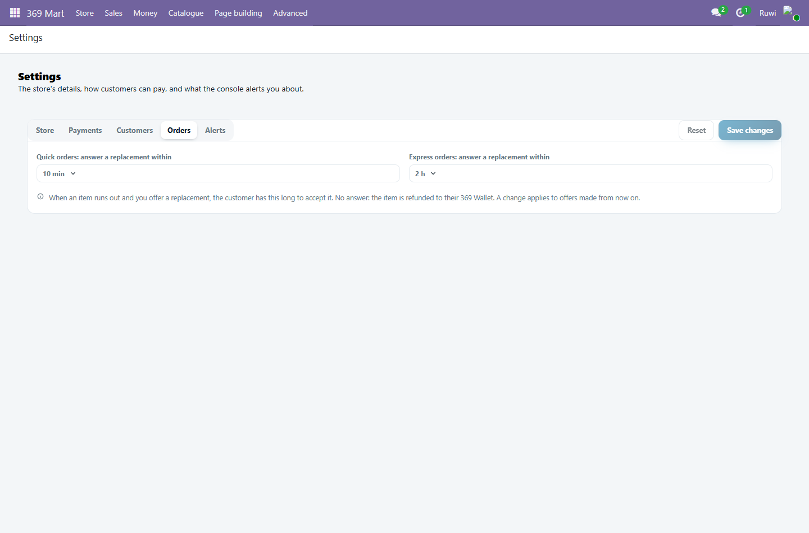
Only staff with the Rider role appear in an order's Rider list. Give the role on the staff member's user form (see the 369 Mart Roles manual). Until someone has it, the order screen says “Nobody has the Rider role yet - give it under Staff & roles.”
Installing the module sets up a few things you do not need to touch:
| Item | Why it exists |
|---|---|
| Delivery, Coupon discount | Two hidden service products that carry the delivery fee and coupon lines on an order. They never show in the shop. |
| Cash on delivery and 369 Wallet journals | One of each per company, so cash a rider brings back and wallet money are not booked as bank money. |
| 369 Wallet balances / 369 Wallet rewards | Accounts that record the money the shop owes customers in their wallets, and the cost of rewards and goodwill credits. |
| Automatic invoice | When an order is confirmed, its invoice is made and posted on its own, and the payment is matched to it. |
| Replacement timer | A job that runs every minute and refunds replacement offers nobody answered in time. |
This is all the desk staff use. Everything here is also on the staff console, with the same buttons and the same data.
Open 369 Mart → Sales → Orders. The desk opens on Needs me: every order still on its way, grouped by what you do next (To pack, Ready to send, Out for delivery). It refreshes itself every 30 seconds, and a new order brings a pop-up and a short chime.
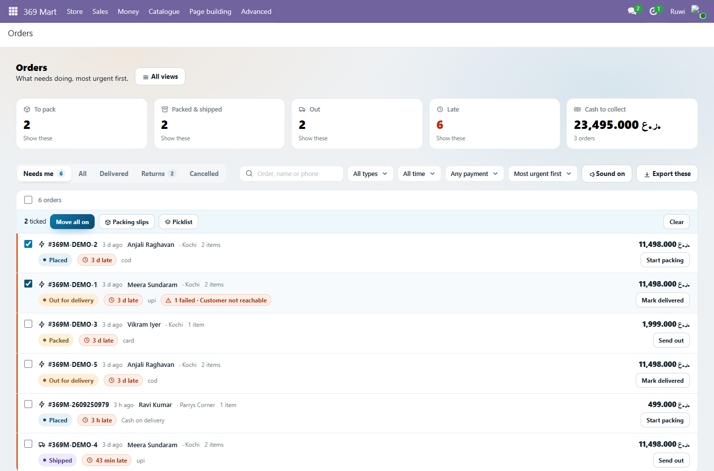
| On the screen | What it does |
|---|---|
| Tiles | To pack, Ready to send, Out for delivery, Late and Cash to collect (the total still to collect at doors). Click a tile to show only those orders. Late turns red when it is not zero. |
| Tabs | Needs me, All, Delivered, Returns (orders with a return) and Cancelled. |
| Search and filters | Search by order number, name or phone. Filter by type (All types / Quick / Express), period (All time / Today / Last 7 days), payment (Any payment / Cash on delivery / Prepaid), and sort by Most urgent first, Longest wait first, Newest first or Highest value. |
| Sound on / Sound off | The new-order chime. Remembered on this browser. |
| Export these | Downloads the rows on screen as a spreadsheet file. |
| All views | Jumps to Orders (all views) — see step 10. |
Each row shows the customer's name and area, any staff tags, a red COD off tag if cash on delivery is switched off for them, the order number, Quick or Express, the item count and how long ago it was placed. Below that: how late it is or when it is due, how it was paid (for example “Cash on delivery - collect at the door”), the rider, a waiting replacement, and any failed delivery tries. On the right are the total and the next-step button.
Press the button on the row (or inside the opened order). The button's name tells you what happens:
| Status now | Quick order | Express order | Becomes |
|---|---|---|---|
| Order placed | Start packing | Mark shipped | Packed (Quick) / Shipped (Express) |
| Packed / Shipped | Send out | Send out | Out for delivery |
| Out for delivery | Mark delivered | Mark delivered | Delivered — asks for the door code |
To move several at once, tick them and press Move all on. Orders out for delivery are skipped, because each needs its own door code; a message tells you how many moved and which did not. Clear unticks everything.
Pressing Mark delivered opens a small box: “Ask for the six-digit code on the customer's phone.” Type the six digits and press Mark delivered. The code works once.
On success the order becomes Delivered, a cash payment is marked collected, and the goods are taken out of stock. A wrong code, or one already used, gets the same answer — “That delivery code is not right.” — so nobody can tell by guessing whether a code is live. The box stays open so you can ask again.
Click a row to open the order in a window. From top to bottom:
The bottom bar holds Cancel order (while allowed), the next-step button, Packing slip, Invoice (once posted) and Close.
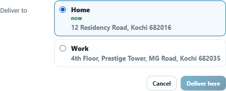
Press Remove beside the item and confirm. The rest of the order carries on. Allowed while the order is still in the store (Order placed, Packed or Shipped) and never for the last item — that is a cancellation.
The item stays on the order struck through with the reason, and a credit note is made if the order was already invoiced.
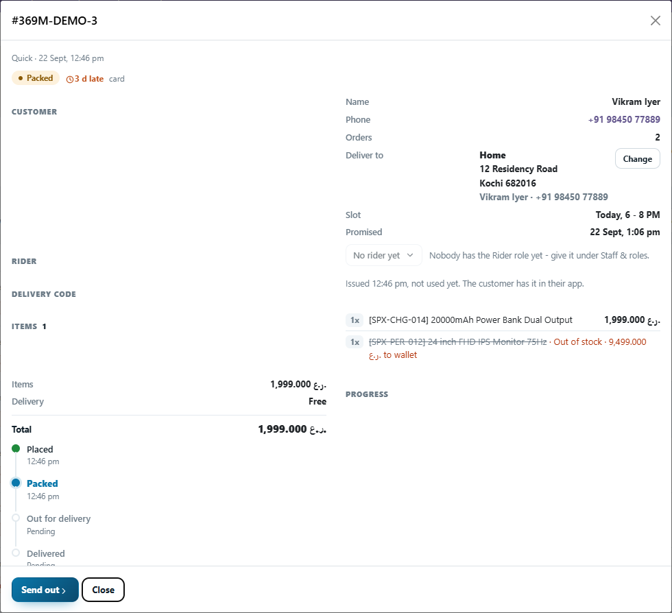
Press Replace beside the item. In Offer a replacement, search and tick up to three in-stock products, then press Send … to customer. Each product shows what the shop pays extra (shop pays +…) or what goes back to the customer — the customer never pays more than they did.
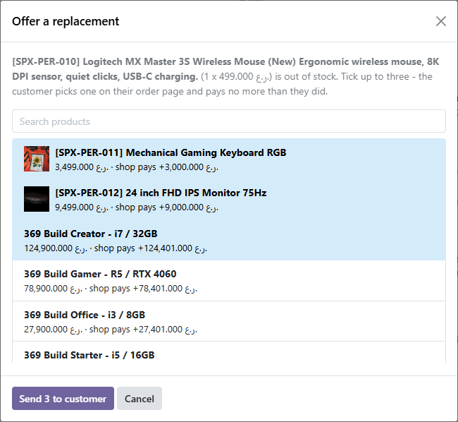
While the customer decides, the item shows “… offered · waiting · N min left” with a Withdraw button, and an Order placed order cannot be packed.
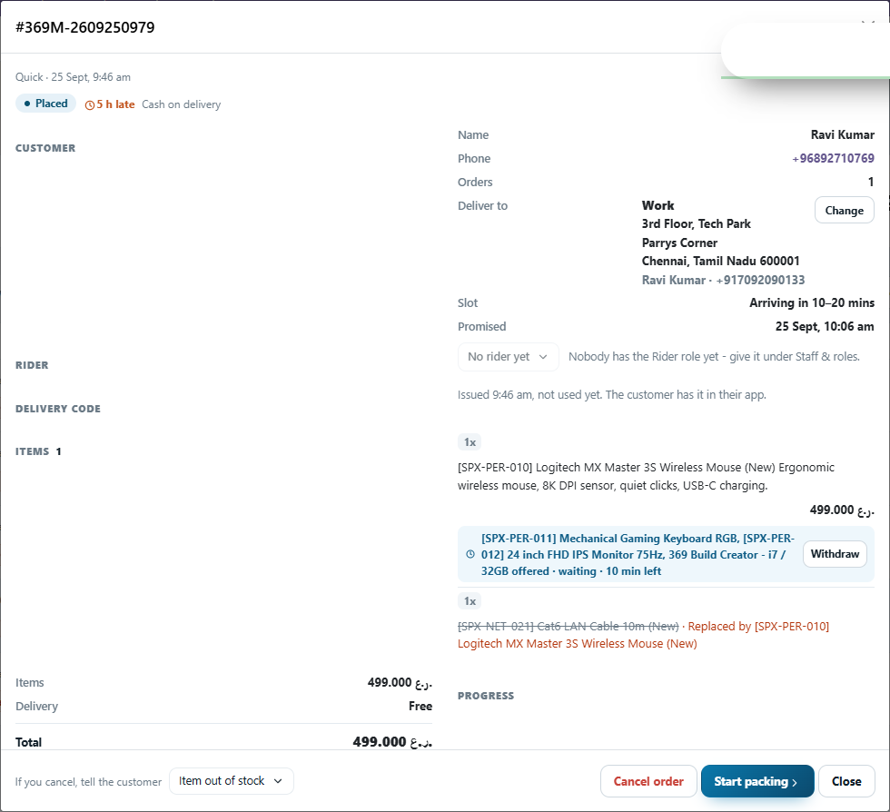
| Customer's answer | What happens |
|---|---|
| Picks one | It goes in the bag at the original price. If it is cheaper, the difference goes to their 369 Wallet (cash orders: less to collect). |
| No, refund me | The item is taken out and refunded, exactly as Remove does. |
| No answer in time | Treated as “refund me”. If it was the last item, the order is left for staff to decide. |
What the customer sees. In the shop app the customer gets a Choose a replacement card with each option, “You pay … — no extra, we cover …”, a countdown, and the buttons Accept this one and No, refund me. Their order page then shows the replaced items struck through.
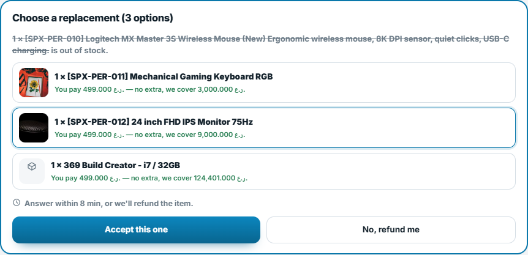
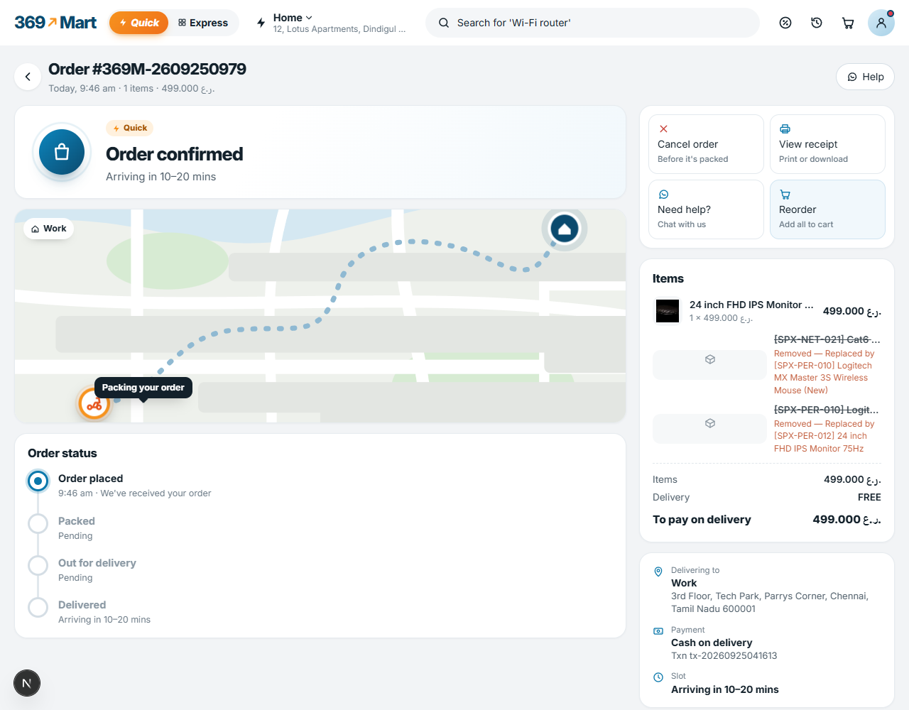
For an order Out for delivery, open it and use Couldn't deliver?. Pick what went wrong: Customer not reachable, Wrong address, Customer refused the order, Customer asked to come later or Other. Then:
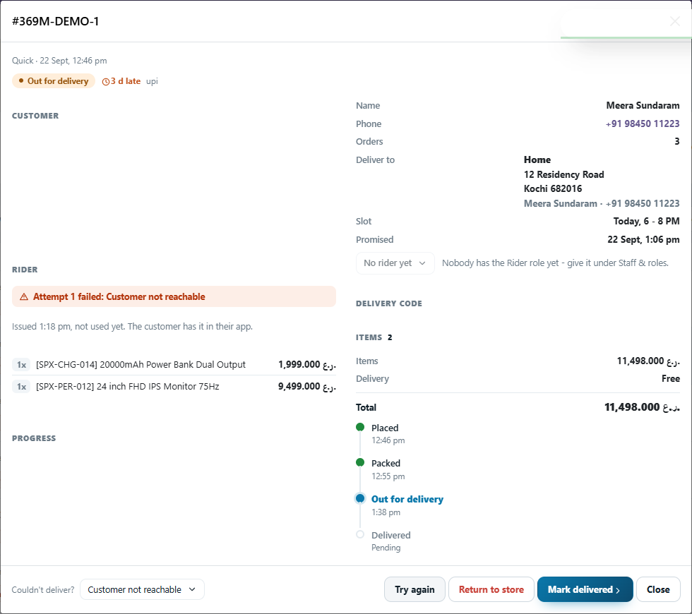
An order can be cancelled only while it is Order placed; after packing, the button disappears. Open the order, choose a reason under If you cancel, tell the customer — Item out of stock, Customer asked to cancel, Address not reachable, Payment not confirmed or Store closed — and press Cancel order. The confirmation tells you how much goes back.
The reason appears on the customer's own tracking screen. Anything paid goes to their 369 Wallet straight away with a credit note; cash on delivery has nothing to refund. The delivery slot and the coupon are given back.
Open 369 Mart → Sales → Returns. Returns the customer asked for in the app wait here, longest wait first. Tiles: Requested, Pickup scheduled, Picked up, Refunded, Refused. Tabs: Needs me, All, Refunded, Refused. Search by order, customer or reason; filter Wants (Refund or Replacement); sort by longest wait or newest.
Each row's button moves the return on: Schedule pickup → Mark picked up → Issue refund. Click a row to see the customer, the reason, what happened, the photos, The money and the Progress.
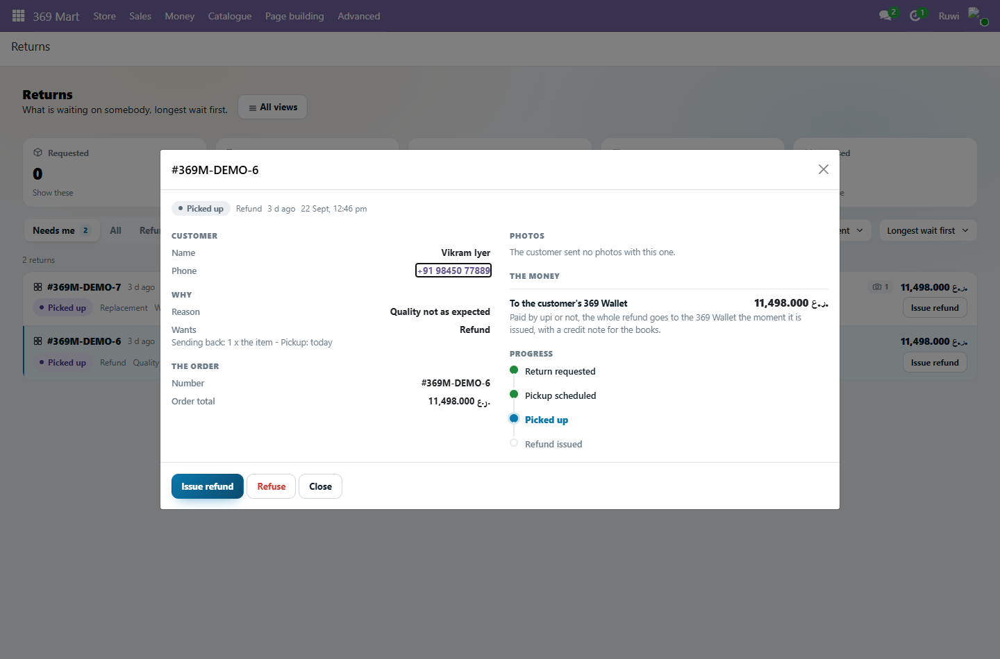
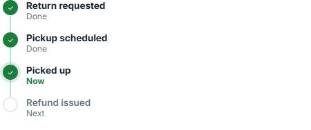
Advanced → Orders (all views) shows the same orders as a board with one column per status. A strip of numbers on top — Today (with a 14-day bar chart), To pack, Out for delivery, Late, Cash to collect — filters the board when clicked. Each card has a Move on button; late cards say “Past its promise”.
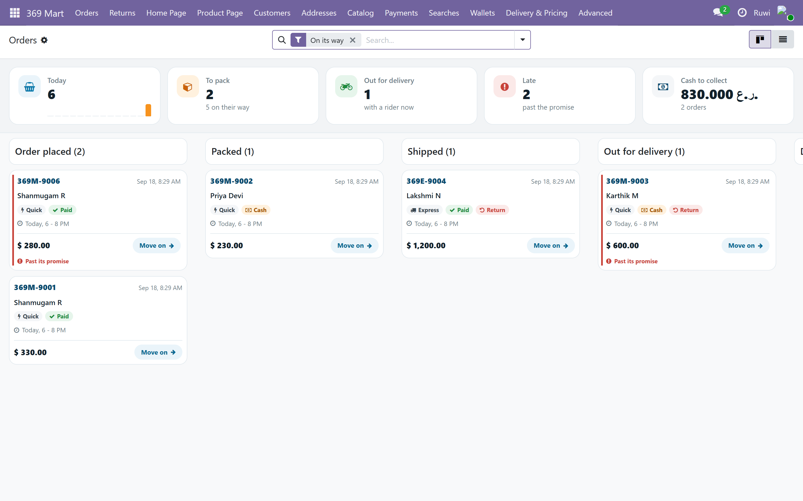
Switch to the list for columns and totals, or open an order for the full form with the Basket, Timeline, Returns and Doorstep tabs. Filters include Today, Late, To pack, Out for delivery, On its way, Delivered, Cash on delivery, Has a return, Quick and Express; group by Status, Storefront, Slot or Placed on.
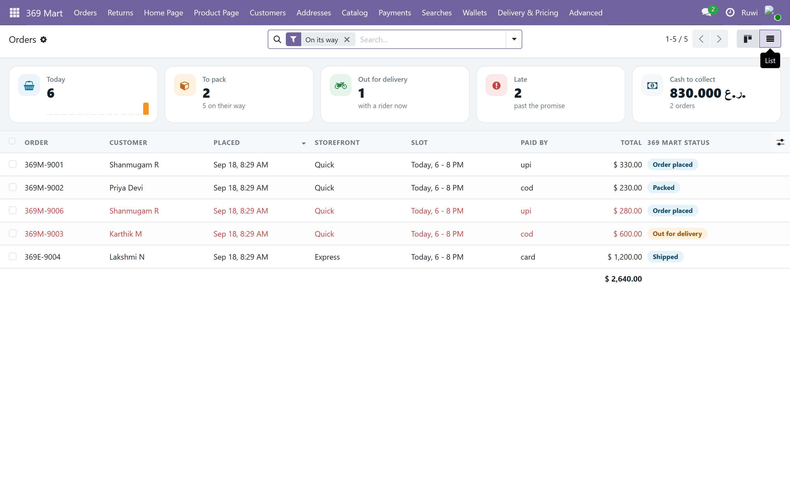
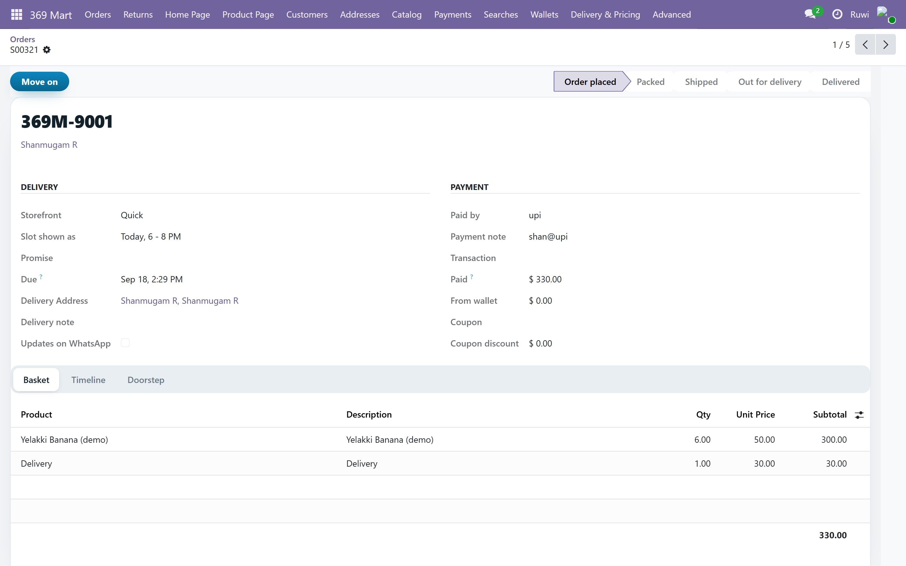
Advanced → Returns (all views) does the same for returns: a board by status with Move on, and a form with Move on, Refuse and the customer's photos.
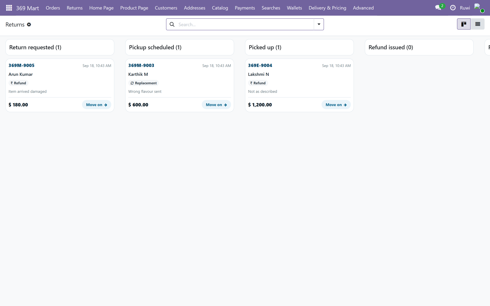
The staff console has the same Orders, Returns and Settings screens. They read and change the same orders, so a step taken in one shows in the other.
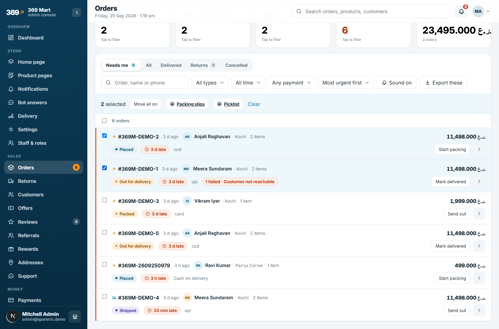
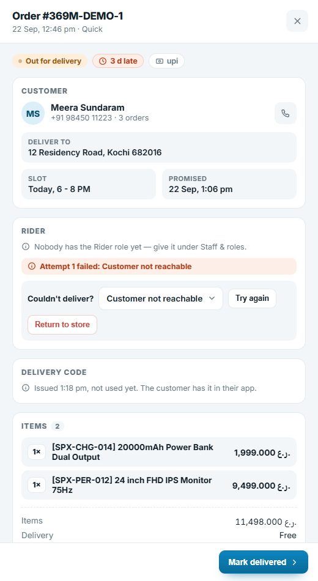
The door code is made by the backend, once per delivery attempt, and kept only in scrambled form. Only the customer sees it, in their own app. Staff screens show when it was sent and when it was used — the Doorstep tab on the order form says: “The delivery code itself is never shown here.” After Try again a fresh code replaces the old one, in case the old one was read out to someone.
Each status change is stamped once with the time and who did it. See it on the order form's Timeline tab (When, Step, By, Note) or in the folded History inside the desk. System notes — an address changed, an item removed or replaced, a rider assigned — appear there too.
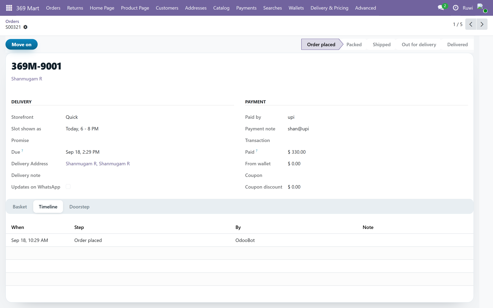
There is one way money goes back: to the customer's 369 Wallet, in full, at once — whether they paid by UPI, card or wallet. No refund waits on a payment gateway. Each refund is capped at what the customer is still owed, so an item removed and a later return can never refund the same money twice. A credit note records it for the accounts; if a credit note ever fails, the customer keeps the refund and finance re-creates the note.
Click the customer's name in an order to open their profile: orders, addresses, returns, support tickets, wallet history, staff notes and tags. Two actions matter for orders:
| Role | What they can do |
|---|---|
| Salesperson | Opens the Orders and Returns desks and the all-views screens; moves, delivers (with the code), cancels and returns orders; prints slips and picklists. |
| Manager | Also writes staff notes, changes a customer's cash-on-delivery switch and gives goodwill credit. |
| Rider | Appears in an order's Rider list so orders can be handed to them. |
| Owner / Administrator (Settings) | Everything, including editing or deleting anyone's staff note. |
| Internal user | No order menus and no order screens. Give Salesperson rights to work the desks. |
This module sends no SMS, email or WhatsApp. Customers follow their order on their own tracking screen in the shop app, where they also see your cancellation reason, replacement offers and refunds. Staff notes are internal and never reach the customer.
| State | Meaning | How to change it |
|---|---|---|
| Not paid for | A basket that was never paid for. Never shown on the desks. | — |
| Order placed | Paid, or cash on delivery accepted. Waiting to be packed or shipped. | Start packing / Mark shipped, or Cancel order. |
| Packed | Quick orders only. Packed in the store. | Send out. |
| Shipped | Express orders only. Shipped from the store. | Send out. |
| Out for delivery | With the rider. | Mark delivered (door code), or Couldn't deliver? |
| Delivered | Closed with the customer's door code. | — (returns go through the Returns desk) |
| Cancelled | Cancelled while placed, or returned to the store after a failed delivery. | — |
| State | Meaning | How to change it |
|---|---|---|
| Return requested | The customer asked for a refund or a replacement. | Schedule pickup, or Refuse. |
| Pickup scheduled | Collection arranged. | Mark picked up, or Refuse. |
| Picked up | The goods are back with you. | Issue refund, or Refuse. |
| Refund issued | Money sent to the 369 Wallet; goods back in stock. | Finished. |
| Refused | Turned down; nothing refunded. | Finished. |
| Waiting for the customer | A replacement offer is open. | Customer answers, it times out, or Withdraw. |
| Accepted / Declined / No answer / Withdrawn | How a replacement offer ended. | Finished. |
| What you see | What to do |
|---|---|
| “That delivery code is not right.” | Ask the customer to read the code again from their app. If they had a failed try earlier, only the newest code works. |
| “… is waiting for the customer to answer about a replacement.” | Wait for the answer or the deadline, or press Withdraw on the offer, then pack. |
| No Cancel order button | The order is past Order placed. Use Remove for single items, or Couldn't deliver? → Return to store once it is out. |
| No Remove button on an item | It is the last item, or the order has left the store. Cancel instead (if still placed). |
| Rider list is empty | Nobody has the Rider role. Give it on the staff member's user form. |
| “Enter the delivery code to close it.” on the board | The board cannot deliver. Use the Orders desk's Mark delivered. |
| A button is refused and the list jumps | Someone moved that order first. The desk has reloaded — check the order's new status. |
| “You do not have access to this.” when adding a note | Staff notes need the Manager role. |
| Orders menu missing | The user needs Salesperson rights. If 369 Mart: New Orders Board is installed, Orders opens the Counter — press All orders. |